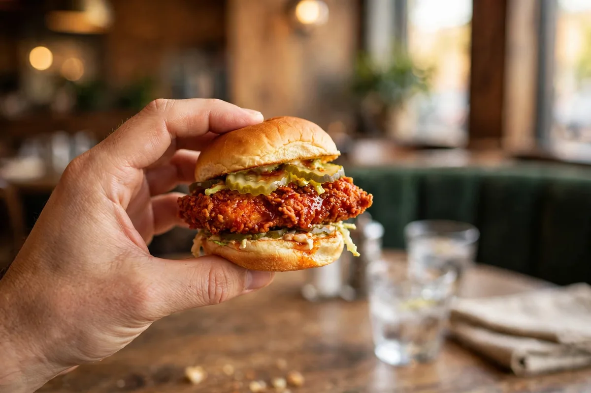

Is Dave's Hot Chicken Halal?
Yes, with one honest catch. Dave's says its chicken is halal: the chicken is bought from halal suppliers, and in the UK Dave's states it plainly in its own FAQ. The catch is that the restaurants themselves are not halal-certified operations, the non-chicken ingredients are not halal-certified, and for the US Dave's has never published who certifies the chicken or how it is slaughtered. This page explains what Dave's Hot Chicken halal claims actually say from what they do not, so you can settle the halal or haram question with the real wording in front of you.

Chicken: halal-sourcedKitchens: not halal-certifiedWhat Dave's Officially Says About Halal
Start with the strongest source there is: Dave's own published words. Dave's Hot Chicken halal policy is stated most clearly in the UK, where the chain's official FAQ answers the question directly.
According to the official UK FAQ, all the chicken served in Dave's restaurants is halal, sourced from suppliers certified as halal chicken providers. The same FAQ says the chickens are pre-stunned before being hand slaughtered, following Islamic guidelines, and that the suppliers' halal certification documents can be seen on request at any restaurant. Then comes the sentence most fan pages quietly drop: Dave's buys its chicken from halal suppliers, but its supply chain and kitchen do not operate under halal procedures, and it does not hold halal certification for any of its other ingredients.
For the US, there is no equivalent official halal FAQ. Dave's US restaurant pages describe the restaurants as serving halal chicken, and many locations carry a "Halal Restaurant" tag in Google listings, but Dave's publishes no US certifier, no US slaughter method and no chain-wide US halal certificate. That gap between the chicken claim and the missing paperwork is the whole story of Dave's Hot Chicken halal in America, and the sections below walk through it piece by piece.
Is All Dave's Hot Chicken Halal?
The chicken, yes, that is the claim everywhere Dave's operates. Is everything halal, though, in the certified sense? No, and the distinction matters: Dave's certifies its chicken supply, not its restaurants.
Two very different claims get mixed up in most write-ups of this question. The first is about the meat: Dave's buys halal chicken, and its founders have said publicly that they pay roughly 10 cents more per pound for halal chicken because they want halal diners in the room. The second is about the operation: no Dave's restaurant runs as a halal-certified kitchen, the fryers and equipment are shared with everything else on the menu, and nothing except the chicken itself carries halal certification. A directory like Zabihah, which lists 171 Dave's locations as halal, is recording the restaurants' own halal-chicken position, not a certification audit.
Some fan sites go further and claim every US location is halal-certified chain-wide by a named certifier. That claim does not appear on any official Dave's page, and cautious halal guides dispute it, pointing out that sourcing is arranged at franchise level. The honest position, and the one this page takes: Dave's Hot Chicken halal chicken is the chain's stated policy; Dave's Hot Chicken halal certification of its restaurants does not exist. If your standard requires a certified kitchen, Dave's does not meet it, wherever you eat.
Is Dave's Hot Chicken Zabiha Halal?
In the UK, Dave's answers this itself: the chickens are hand slaughtered, but they are pre-stunned first. Whether that counts as zabiha depends on the standard you follow, and Dave's US slaughter method is not published at all.
Hand slaughtered is the phrase to hold on to. The UK FAQ describes pre-stunned, hand-slaughtered birds, which is the model accepted by certifiers that permit reversible stunning. Stricter standards, most notably the HMC model in the UK, do not accept stunning at all, so a diner who follows that standard will not treat stunned meat as zabiha even when the slaughter itself is by hand. Neither answer is a trick; they are two published standards reading the same facts differently. To explain the difference simply: both standards accept the hand slaughter; they part company only on the stun that comes before it.
For the US, Dave's Hot Chicken zabiha status is simply undocumented: no official page states whether US chicken is hand or machine slaughtered, or whether it is stunned. Anyone who tells you the US supply is definitely zabiha, or definitely not, is going past what Dave's has published. The only way to close that gap for a specific store is the certificate check in the locations section below.
Who Certifies the Chicken?
Nobody Dave's has named in public for the US. The halal certificate at Dave's belongs to the chicken supplier, not to the restaurant, and in the UK Dave's says those supplier documents can be seen on request in store.
That structure explains most of the confusion around Dave's Hot Chicken halal certification. A certified supplier sells halal chicken to the restaurant; the restaurant itself holds no certificate, runs no certified procedures, and cannot show you a certificate with its own name on it. What it can show you, at least in the UK, is the supplier's paperwork. US stores are not covered by any published version of that promise, which is why asking is step one of the verification routine below.
One related question deserves a straight answer: did anything change when Dave's was sold in 2025? Searches for whether Dave's is still halal spiked after the ownership change, but nothing in Dave's published material announces any change to chicken sourcing, and the halal chicken position on its pages is unchanged. If that ever changes, the UK FAQ wording is the first place it would show.
Halal Status by Country
Dave's Hot Chicken halal status is not one answer worldwide. It ranges from an explicit official policy in the UK to a legal default in the Middle East, with the US and Canada in between.
| Market | Chicken | Restaurant certification | Slaughter method |
|---|---|---|---|
| United Kingdom | Halal, per Dave's official FAQ | Not certified; kitchen not under halal procedures | Pre-stunned, hand slaughtered (official) |
| United States | Location pages describe halal chicken | None published | Not published |
| Canada | No published corporate position found | None published | Not published; ask the store |
| UAE, Saudi Arabia, Qatar | Halal by national food law | Regulated locally | Set by local regulation |
| Ireland & newer markets | No official statement found | None published | Not published; ask the store |
The pattern to remember: the further a market is from the UK FAQ, the more the answer depends on the individual store. That is exactly what the verification steps below are for, and they apply to every market in the table, including the US.
Halal Locations: How to Verify a Dave's Near You
Searches for Dave's Hot Chicken halal near me (and for halal locations generally) end at the same problem: there is no official chain-wide halal locations list. What exists is a directory record, your store's own page, and the certificate. Check all three.
Zabihah lists 171 Dave's locations with halal summaries recorded from the restaurants themselves. If your store is listed, that is a real signal; if it is not, it proves nothing either way.
Dave's US location pages describe the chicken the store serves. Note the exact wording for your store, and check whether its Google listing carries the "Halal Restaurant" category tag.
Call or visit and ask to see the chicken supplier's halal certificate. In the UK, Dave's says these documents can be accessed on request; a US store that serves halal chicken should be able to show the same paperwork.
If zabiha matters to you, ask whether the chicken is hand slaughtered and whether it is stunned. Photos of certificates posted by other customers are a start, but the store's answer, with the certificate in hand, is the proof.
The same four steps work in every city with a Dave's, including:
- Denver
- Dallas
- Miami
- Brooklyn
- Buford
- Troy
- Schaumburg
- Secaucus
- Cardiff
- Croydon
- Bristol
- Liverpool
- Nottingham
- Newcastle
- Stevenage
- Resorts World
- Mississauga
- Kitchener
- Victoria
Brooklyn's four stores get the full location treatment on our Brooklyn guide, and the menu these stores serve, heat by heat, is on the spice levels page.
Frequently Asked Questions
Is Dave's Hot Chicken halal in the USA?
The chicken is described as halal on Dave's US restaurant pages, and halal directories list 171 US locations on that basis. What the US does not have is a published certifier, a published slaughter method or a certified kitchen, so the careful answer is: halal chicken, uncertified restaurant, verified store by store.
Does Dave's Hot Chicken use halal meat?
Yes. Dave's buys its chicken from halal suppliers as a matter of policy, something its founders have discussed openly, including paying roughly 10 cents more per pound for halal chicken. The halal part of a Dave's meal is the meat; the other ingredients are not halal-certified.
Is Dave's Hot Chicken zabiha halal?
In the UK, Dave's states its chickens are pre-stunned and then hand slaughtered. Standards that accept reversible stunning treat that as halal; stricter standards that reject all stunning do not treat it as zabiha. For the US, Dave's has never published its slaughter method, so US zabiha status is unverified.
Is everything at Dave's Hot Chicken halal?
No. Everything chicken rests on the halal chicken supply, but Dave's states it holds no halal certification for any other ingredient, and its kitchens do not operate under halal procedures. The restaurants are not halal-certified, even where the chicken is halal.
Does Dave's Hot Chicken serve pork?
No. There is no pork anywhere on the Dave's menu, and no alcohol either. The menu is chicken, cauliflower, fries, cheese, slaw and sauces, which removes one common concern for halal diners entirely.
Who certifies Dave's Hot Chicken as halal?
No certifier is named by Dave's for the US, and the restaurants themselves are not certified anywhere. In the UK, certification sits with the chicken suppliers, and Dave's says their documents can be seen on request at any restaurant.
Is Dave's Hot Chicken halal in the UK?
Yes for the chicken, by Dave's own official FAQ: all UK chicken is halal, pre-stunned and hand slaughtered, from certified halal suppliers. The same FAQ adds that the supply chain and kitchen do not operate under halal procedures and other ingredients are not certified.
How do I find a halal Dave's Hot Chicken near me?
Check Zabihah's listing for your store (171 locations are listed), read your store's own Dave's location page for its chicken wording, then ask the store to show its supplier's halal certificate. The locations section above walks through the four steps in order.
More Dave's Guides
Browse the rest of the Dave's guides.